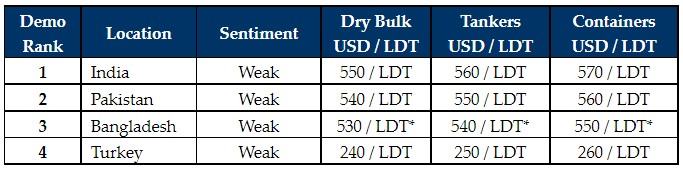

inWeekly Demolition Reports07/11/2022

Some unbelievably low and unrealistic offers have started to emerge from sub-continent markets this week, and assuch, both Owners and Cash Buyers would be well advised to leave ship recycling destinations alone for the time-being, especially until some sort of floor is reached and stability regains a foothold.
It has become increasingly difficult to obtain any firm or serious offers from any recycling market, as currencies continue to suffer across all recycling destinations and steel endures further volatile moves this week.
Workable L/Cs are of chief concern in Bangladesh where End Buyers are struggling to obtain any sort of financing from local banks, amidst strict and ongoing governmental regulations on precious foreign currency reserves in the country.
On the rare occasion when an End Buyer is able to open a workable L/C in Bangladesh (mostly on smaller LDT tonnage), the numbers offered are so pitifully low, it’s nearly instantaneous to see tonnage withdrawn and re-directed towards competing markets.
We have even seen Local Recyclers attempting to fix deals with Cash Buyers and Owners, subject to them obtaining approval from their financing banks within 3-4 days, which of course is never going to work and will see Bangladesh deprived of any meaningful tonnage until the end of the year – or at least until some sort of stability is seen.
Finally, at the far end, after holding on and displaying some sort of stability (even though it’s in the dumps), things couldn’t get worse for Aliaga Buyers as steel prices took a small tumble this week and the Lira gradually slips further.
Overall, the economic situation across the recycling destinations remains precarious, with currencies weakening by the day and a shortage of U.S. Dollars in those countries, governments and banks are failing to sanction suitable financing for a ship recycling that they do not see as imperative under the current climate.
For week 44 of 2022, GMS demo rankings / pricing for the week are as below.

📄 Download PDF: Ship-recycling-market-insight-week-44-2022-Frankly-Farcical.pdfSource: GMS,Inc. ,https://www.gmsinc.net/gms_new/index.php/web